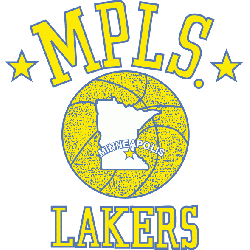
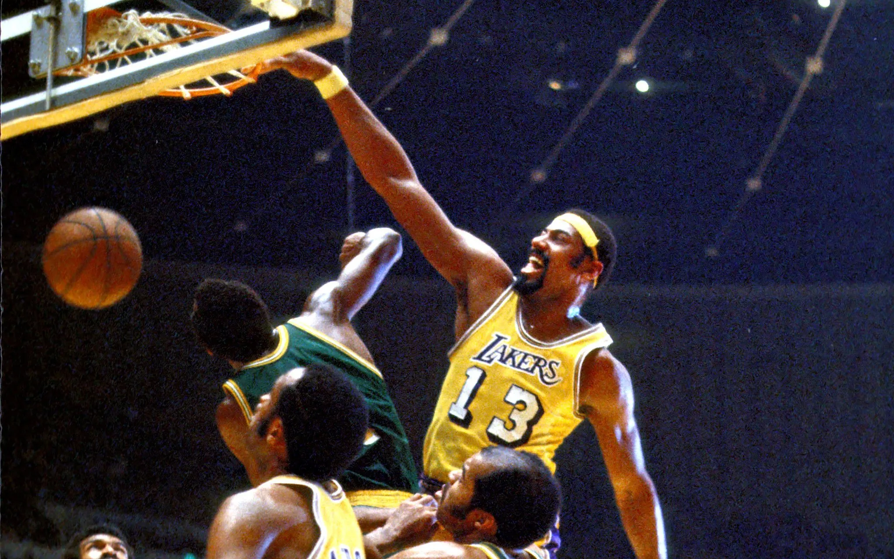
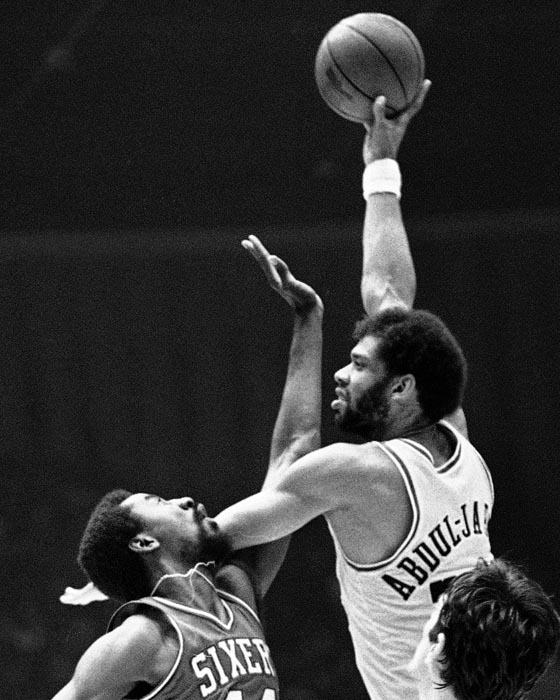
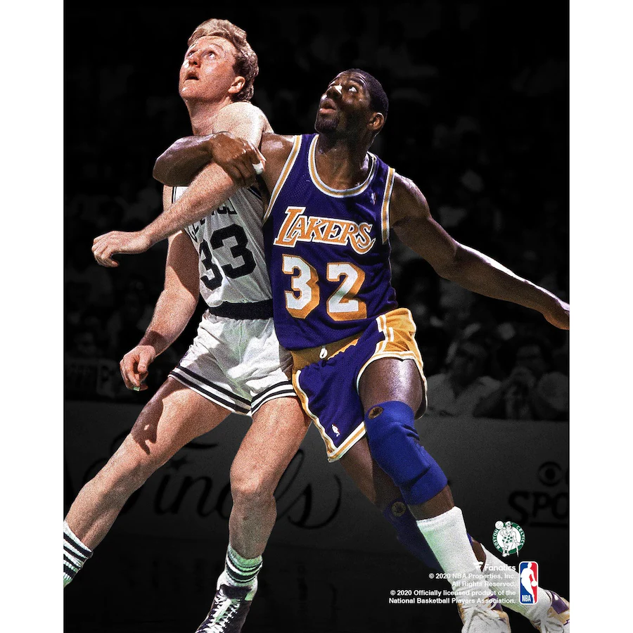
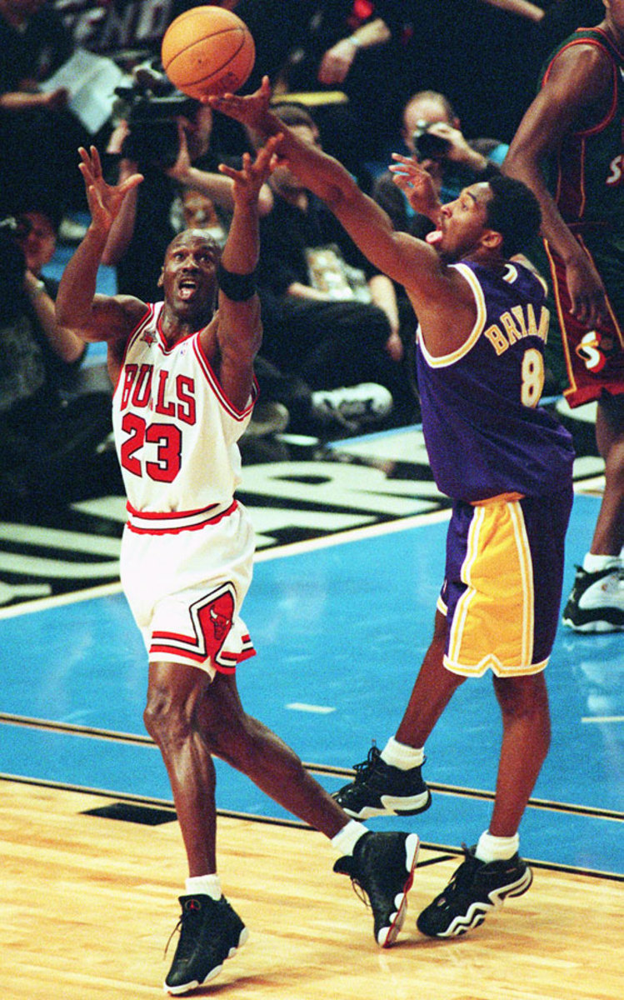
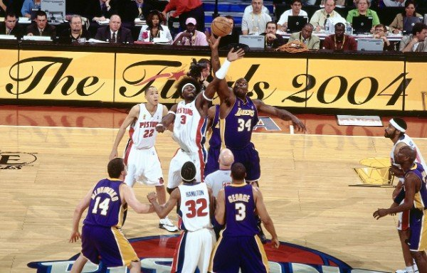
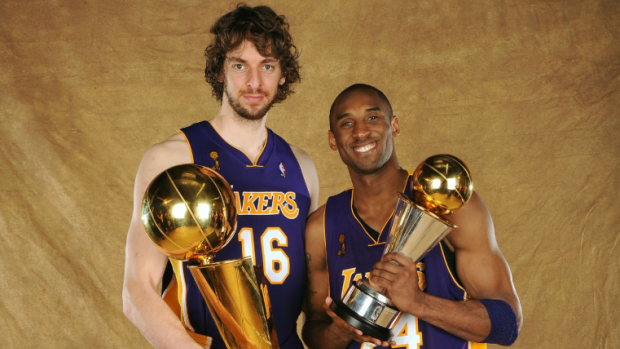
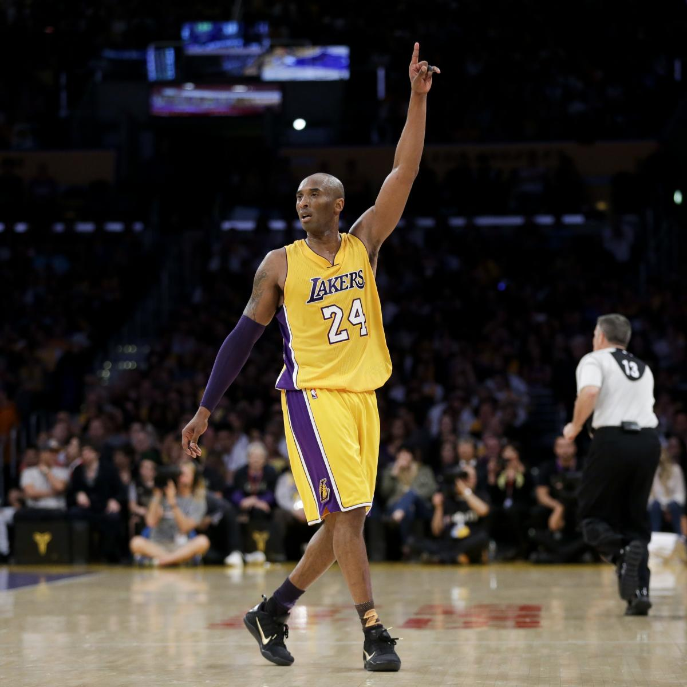
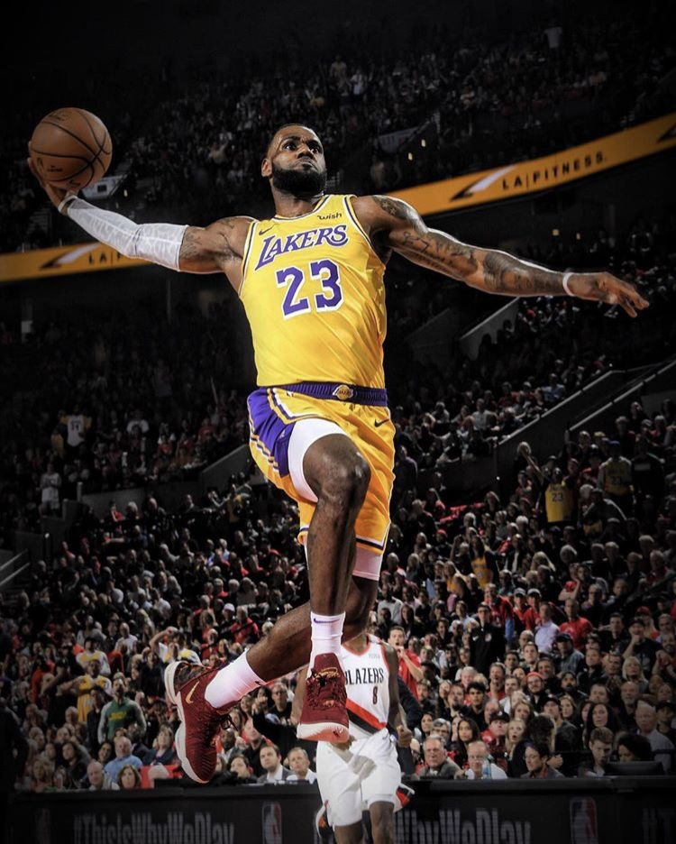

I Los Angeles Lakers sono una delle trenta squadre di pallacanestro che giocano nella NBA (National Basketball Association), il campionato professionistico degli Stati Uniti d'America. I Lakers disputano le loro partite casalinghe alla Crypto.com Arena che dividono con i rivali Los Angeles Clippers e con la squadra femminile Los Angeles Sparks.
I Lakers hanno vinto complessivamente 17 titoli (primato a pari merito con i Boston Celtics), cinque dei quali a Minneapolis prima di trasferirsi a Los Angeles nella stagione 1960-1961.
Sono 25 i membri della Hall of Fame che hanno indossato la maglia dei Lakers; altri quattro (John Kundla, Bill Sharman, Pat Riley e Phil Jackson) hanno allenato la squadra. Ben quattro giocatori hanno vinto il premio come miglior giocatore dell'anno (MVP) vestendo la maglia dei Lakers (Kareem Abdul-Jabbar, Magic Johnson, Shaquille O'Neal e Kobe Bryant).
1946-1959: La nascita e gli inizi a Minneapolis

La storia dei Lakers comincia nel 1946 quando Ben Berger e Morris Chalfen comprarono i Detroit Gems dalla National Basketball League per 15.000 dollari. La squadra fu trasferita a Minneapolis nel 1947. Potendo contare già su una squadra solida con Jim Pollard e il playmaker Herm Schaefer, l'unico innesto di spessore fu il centro George Mikan considerato tra i pionieri del basket americano. Con quest'ultimo a guidare la squadra i Lakers vinsero, al loro primo anno, la propria Division con un record di 43 vittorie e 17 sconfitte. Nel campionato BAA del 1949 i Lakers continuarono il loro dominio battendo i Washington Capitols 3-1 in finale, e vincendo ancora il titolo nel 1950 contro i Syracuse Nationals per 4-2. La stagione seguente, la squadra migliorò il proprio record portandolo a 44 vittorie e 24 sconfitte vincendo la Western Division. Nei play-off vinsero in tre partite contro gli Indianapolis Olympians, ma furono sconfitti dai Rochester Royals il turno successivo. La squadra detiene il record per la partita con il minor punteggio nella storia dell'NBA assieme ai Fort Wayne Pistons: il 22 novembre 1950, i Lakers erano in vantaggio fino all'ultimo quarto, quando i Pistons si portarono in testa e vinsero per 19 a 18. Questo avvenne in un periodo in cui non erano ancora state introdotte regole che velocizzassero il gioco, come ad esempio la regola dei 24 secondi. Nella stagione 1951-1952 i Lakers vinsero 40 partite terminando al secondo posto nella propria Division. In finale, contro i New York Knicks, i giallo-viola si imposero dopo sette partite molto combattute. Con un record di 48-22 i Lakers nella stagione 1952-1953 andarono nuovamente alle finali NBA battendo prima i Fort Wayne Pistons nella finale di Conference e poi i Knicks per il titolo, Mikan divenne il primo Laker a vincere l'MVP dell'All-Star Game. Sebbene la stella dei Lakers, George Mikan, patì un problema al ginocchio per l'intera stagione 1953-1954 egli riuscì a segnare 18 punti di media a partita grazie anche all'aiuto del rookie Clyde Lovellette. La squadra vinse, così, il terzo titolo consecutivo battendo i Syracuse Nationals in sette gare. In seguito al ritiro di Mikan al termine della stagione, la squadra riuscì comunque a vincere 40 partite. Nonostante la vittoria contro i Royals al primo turno dei play-off, la squadra fu sconfitta dai Fort Wayne Pistons il turno successivo. Negli ultimi cinque anni della decade i Lakers non riuscirono più a vincere almeno il 50% delle partite e non tornarono più a disputare le finali. Con l'arrivo della stella Elgin Baylor che vinse il NBA Rookie of the Year Award e il MVP dell'All-Star Game nel 1958-1959 i Lakers tornarono alle finali dove furono sconfitti per 4-0 dai Boston Celtics.
1959-1974: Trasferimento a Los Angeles e la rivalità con i Celtics
Sconfitte nelle finali
Al loro ultimo anno a Minneapolis i Lakers stabilirono un primato negativo di 25 vittorie 50 sconfitte ottenendo così il diritto per la seconda chiamata al draft e scelsero Jerry West proveniente dall'Università della Virginia Occidentale. Durante l'offseason del 1960 la squadra diventò la più importante della costa occidentale quando Bob Short decise di spostarsi a Los Angeles. Nonostante la squadra potesse contare sui futuri Hall of Famers Elgin Baylor, Jerry West e Gail Goodrich le speranze di vittoria del titolo non si concretizzarono nei loro primi cinque anni a Los Angeles, poiché la squadra perse 4 finali NBA contro i Boston Celtics di Bob Cousy e Bill Russell nel 1962, 1963, 1965, 1966. Dopo aver giocato per sette stagioni alla Los Angeles Memorial Sports Arena la squadra si spostò in un nuovo palazzetto, il Forum. Nella stagione 1967-1968, i Lakers furono nuovamente sconfitti alle finali dai Celtics. Il 9 luglio 1968 fu acquistato Wilt Chamberlain dai Philadelphia 76ers per Darrell Imhoff, Archie Clark e Jerry Chambers. I Lakers e i Celtics si incontrarono di nuovo alle finali del 1969 con i lacustri che avevano il vantaggio del campo in tutta la serie, con l'eventuale gara decisiva in casa. Tuttavia, nonostante fossero i favoriti dai pronostici, non poterono nulla contro gli storici rivali e persero il titolo in sette gare. I Celtics ottennero così il loro undicesimo titolo in tredici anni. Jerry West fu nominato primo Finals MVP ed è l'unico giocatore ad aver vinto il premio nonostante avesse perso le finali. Nel 1970 la squadra tornò a disputare le finali e per la prima volta dal 1954 gli avversari non furono i Celtics, ma i New York Knicks. Il risultato però non cambiò e i giallo-viola, come nelle sette finali precedenti, persero, ancora una volta in gara 7, e la franchigia della Grande Mela vinse il suo primo anello. La stagione seguente i Lakers persero contro i Milwaukee Bucks guidati da Lew Alcindor (ora conosciuto come Kareem Abdul-Jabbar) alle finali della Western Conference.
Il titolo 1972

La stagione 1971-72 portò forti cambiamenti. Il proprietario della franchigia Jack Kent Cooke prese come allenatore Bill Sharman, mentre Elgin Baylor annunciò il ritiro all'inizio della stagione dopo aver appreso di avere un problema alle gambe. La squadra, tuttavia, riuscì a vincere 14 partite di fila a novembre e 16 partite di fila a dicembre. A gennaio seguirono altre tre vittorie consecutive prima di arrestare a 33 vittorie consecutive la straordinaria striscia record contro i Milwaukee Bucks. Quell'anno i Lakers vinsero 69 partite stabilendo il nuovo record NBA rimasto tale fino a quando i Chicago Bulls vinsero 72 partite nella stagione 1995-1996. Chamberlain ottenne la media personale più bassa di punti a partita (14,8), ma guidò la classifica dei rimbalzi con una media di 19,2 a partita. Jerry West fu il miglior uomo assist della stagione con 9,7 assist e una media di 25 punti a partita e vinse MVP dell'All-Star Game. Alla fine della stagione Bill Sharman fu nominato coach dell'anno. Alle finali i Lakers sconfissero i New York Knicks, ottenendo così il loro primo titolo dopo 18 anni (sesto complessivo), e il primo da quando la franchigia si era trasferita a Los Angeles. Chamberlain fu eletto Finals MVP.
Durante la stagione 1972-73 i Lakers non riuscirono a migliorare il record di vittorie dell'anno precedente, ma vinsero comunque la propria Division con 60 vittorie. Wilt Chamberlain vinse di nuovo il titolo come miglior rimbalzista. La squadra trionfò contro i Chicago Bulls dopo sette partite durante le semifinali di Conference, e poi sconfisse i Golden State Warriors nelle finali della Western Division.
La finale persa e i ritiri
Nel 1973 i Lakers incontrarono nuovamente i Knicks in finale, ma stavolta furono battuti nettamente in cinque partite. L'anno successivo Chamberlain si ritirò dopo 15 anni di carriera NBA. La stagione 1973-74 proseguì con i problemi alle gambe per Jerry West che giocò solo 31 partite. Gail Goodrich guidò la squadra a vincere la Pacific Division con un record di 47-35. Ai play-off i Lakers furono sconfitti dai Milwaukee Bucks alle semifinali di Conference. La stagione seguente iniziò con il ritiro di West dopo 14 anni di carriera NBA.
1974-1979: Kareem e gli inizi dello Showtime

Dopo aver saltato i playoff nella stagione 1974-75 i Lakers acquistarono Kareem Abdul-Jabbar, il giocatore più forte del campionato a quei tempi. Esperto in ganci cielo e stoppate, Abdul-Jabbar vinse il premio di MVP nella stagione 1975-76 guidando la classifica nei rimbalzi, nelle stoppate e nei minuti giocati. Alla fine della stagione la squadra non riuscì comunque a qualificarsi per i play-off con un record negativo di 40-42. West sostituì Bill Sharman alla guida della squadra e al termine della stagione 1976-77 i Lakers ottennero il record di 53-29 con Abdul-Jabbar eletto ancora MVP. Sconfissero i Golden State Warriors in sette gare, ma furono battuti alle finali di Conference dai Portland Trail Blazers. Per la stagione successiva i Lakers acquistarono Jamaal Wilkes da Golden State e Adrian Dantley da Indiana e scelsero Norm Nixon ai draft. Nei primi due minuti della prima gara della stagione 1977-78 contro i Milwaukee Bucks, Abdul-Jabbar prese a pugni Kent Benson per un gomito troppo alto e si ruppe la mano. La squadra vinse 45 partite senza Abdul-Jabbar nei due mesi successivi. Durante la stagione 1978-79 arrivò il forte difensore Michael Cooper e il team ottenne un record di 47-35, ma fu battuto dai Seattle SuperSonics alle semifinali.
1979-1989: Lo Showtime
Magic Johnson e il titolo
Durante il draft del 1979 i Lakers selezionarono Magic Johnson da Michigan State con la prima scelta assoluta, ricevuta grazie a una trade di due anni prima con i New Orleans Jazz. I Lakers vinsero 60 partite nell'anno da rookie di Magic Johnson con Abdul-Jabbar che vinse il suo terzo titolo di MVP. I Lakers ai playoffs batterono nell'ordine Phoenix Suns e Seattle SuperSonics e sconfissero in gara-6 delle finali del 1980 i Philadelphia 76ers grazie a un'ottima prestazione da parte di Johnson che giocò da centro a causa di un infortunio ad Abdul-Jabbar. Finì la partita decisiva con 42 punti, 15 rimbalzi e 7 assist e permise ai Lakers di vincere il settimo titolo (il secondo a Los Angeles), venendo nominato MVP delle finali, riconoscimento mai ottenuto da nessun rookie nella storia della NBA.
1981-1989: la seconda rivalità con Boston

L'anno dopo la squadra terminò al secondo posto dietro i Phoenix Suns nella Pacific Division con un record di 54-28 nonostante l'infortunio di Magic Johnson. Ma gli Houston Rockets, guidati da Moses Malone, stopparono i Lakers al primo turno dei playoff. Il proprietario Jerry Buss acquistò il centro Bob McAdoo e licenziò Paul Westhead come allenatore capo dopo che i Lakers iniziarono la stagione 1981-1982 con un record di 7-4. Buss promosse da allenatore in seconda ad allenatore capo Pat Riley il 19 novembre e la squadra vinse 17 delle sue 20 partite successive. Dopo aver vinto il titolo della Pacific Division la squadra proseguì la propria striscia vincente ai play-off vincendo nove partite di fila ed aggiudicandosi il titolo di campione con un record di 12-2 battendo i Phoenix Suns, i San Antonio Spurs e i Philadelphia 76ers con Johnson eletto ancora MVP delle finali. Nel draft NBA 1982 i Lakers scelsero
James Worthy
dal Nord Carolina. Vinsero la Pacific Division con un record di 58-24, avanzando alle finali NBA del 1983 dopo aver battuto Portland e San Antonio nei primi due rounds. I Sixers, tuttavia, guidati da Julius Erving e Moses Malone, vinsero il campionato con quattro vittorie consecutive. Nel 1983-1984 iniziò un nuovo capitolo della rivalità coi Boston Celtics guidati da Larry Bird, Robert Parish e Kevin McHale che sconfissero i Lakers in finale. Con la stagione 1984-85, lo "Showtime" dei Lakers raggiunse l'apice del successo. La squadra vinse per la quarta volta consecutiva la Pacific Division. In finale i Lakers persero gara-1 contro i Celtics di Larry Bird col punteggio di 148-114 in quello che oggi è ricordato come il “Massacro del Memorial Day”. Tuttavia i giallo viola riuscirono a resistere e a battere i Celtics in gara sei al Boston Garden laureandosi campioni per la nona volta con Abdul-Jabbar MVP delle finali.
Nella stagione 1985-86 nelle prime 27 partite i Lakers ottennero ben 24 vittorie e conclusero la season con 62 vittorie vincendo il loro quinto titolo consecutivo della Pacific Division. Comunque gli Houston Rockets sconfissero i Lakers nella finale della Western Conference in cinque partite con un tiro all'ultimo decimo di secondo di Ralph Sampson. L'anno successivo i Lakers rafforzarono la loro panchina con Mychal Thompson e Wes Matthews e ottennero ben 65 vittorie, la seconda miglior prestazione di sempre della franchigia. I Lakers arrivarono alle finali per la terza volta consecutiva dopo aver battuto Denver, Golden State e Seattle contro i Boston Celtics di Larry Bird e li sconfissero conquistando gara-4 al Boston Garden con un tiro in gancio di Magic a due secondi dalla fine, in una serie che fu vinta dai Lakers per 4-2. Johnson vinse il suo primo MVP della stagione regolare. Nella stagione 1987-88 i Lakers vinsero il loro settimo consecutivo titolo della Pacific Division e sconfissero in finale i Detroit Pistons per 4-3. James Worthy fu nominato MVP delle finali. Nella stagione 1988-1989 la squadra vinse 57 partite arrivando facilmente in finale con un record 11-0 e Johnson vinse l'MVP. Anche questa volta gli avversari furono i Detroit Pistons che riuscirono ad avere la meglio con un netto 4-0 grazie anche agli infortuni di Byron Scott e Magic Johnson.
1989-1999: Il post-Showtime
Il calo
Il 28 giugno 1989 Kareem Abdul-Jabbar dopo 20 anni di carriera professionistica annunciò il ritiro e venne sostituito da Vlade Divac e Sam Perkins nel posto di centro, Pat Riley alla sua ultima stagione alla guida dei Lakers vinse il premio coach dell'anno mentre Johnson l'MVP dell'All-Star Game e l'MVP, ma i Lakers fallirono l'approdo in finale a causa della sconfitta in semifinale di conference con i Phoenix Suns. Nel 1990-91 la squadra disputò un'altra finale, ma fu sconfitta dai Chicago Bulls di Michael Jordan in cinque partite. Il 7 novembre 1991 Magic Johnson annunciò di essere risultato positivo ad un test dell'HIV e che si sarebbe ritirato immediatamente lasciando i Lakers con il solo James Worthy come unico superstite della squadra plurivincitrice degli anni '80. Nella prima stagione senza Magic i lakers vinsero solo 43 partite, mentre in quella successiva solo 39. In questi due anni approdò comunque ai playoffs perdendo al primo turno prima contro Portland (1-3), poi contro Phoenix (2-3). Durante la stagione 1993-1994 Worthy si ritirò, mentre arrivarono la giovane guardia Nick Van Exel e il centro Sam Bowie, il team si aggiudicò appena 33 partite non qualificandosi per i play-off per la quarta volta nella propria storia. La stagione 1994-1995 vide l'arrivo di Del Harris come head coach e la formazione tornò ai playoffs, grazie a un record di 48-34, dopo un solo anno di assenza, battendo Seattle 3-1 al primo turno ma venendo sconfitta in semifinale di conference da San Antonio (2-4). L'anno seguente vide il ritorno in campo di Magic Johnson a seguito del ritiro per i problemi di HIV. La squadra migliora il suo record, 53-29, ma viene sconfitta al primo turno dei playoffs per 1-3 da Houston.
La ricostruzione - Arrivi O'Neal e Bryant

Nel 1996 i Lakers acquistarono il free agent Shaquille O'Neal e il rookie Kobe Bryant dagli Charlotte Hornets per Vlade Divac (che avrebbe dovuto cedere il ruolo di centro titolare a O'Neal), ponendo le basi per un duo che avrebbe garantito grandi soddisfazioni negli anni a venire. Usarono la loro 24ª scelta del draft per selezionare Derek Fisher. Durante la stagione fu scambiato Cedric Ceballos con i Phoenix Suns per Robert Horry, mentre fu preso anche Eddie Jones.
O'Neal guidò la squadra ad un record di 56-26, il loro miglior risultato dal 1991 saltando 31 partite per un infortunio. I Lakers sconfissero i Portland Trail Blazers al primo turno dei playoffs nel 1997. O'Neal realizzò in gara 1 contro Portland ben 46 punti realizzando la migliore prestazione di un Laker ai play-off dopo i 53 punti di Jerry West contro i Celtics nel 1969. Al turno successivo i Lakers furono sconfitti 4-1. La stagione 1997-98 cominciò come mai era successo con un record positivo di 11-0. Per tutta la stagione i giallo viola lottarono contro i Seattle SuperSonics per la testa della Pacific Division. Negli ultimi due mesi della stagione i Lakers vinsero 22 delle 25 partite restanti aggiudicandosi la Division. Al primo turno dei play-off i Lakers sconfissero Portland 4-1. Nel turno successivo affrontarono i SuperSonics che nonostante la vittoria in gara 1 non poterono fare nulla contro i Lakers che si aggiudicarono le successive quattro partite. Furono battuti dagli Utah Jazz alle finali di Conference per 4-0. Shaq e Kobe intanto garantivano sempre maggiore sostanza e Los Angeles aveva da ben sperare per il futuro. In estate i Lakers puntellarono la panchina con veterani di grande qualità come Glen Rice, Dennis Rodman e Derek Harper. I Lakers si presentarono oltre che con questi nuovi acquisti anche con un nuovo allenatore in quanto Del Harris venne rimpiazzato da Kurt Rambis; in stagione la squadra ebbe delle difficoltà ma raggiunse i playoffs da quarta a ovest con un record di 31-19 (la stagione fu accorciata per via del lockout). Dopo avere superato al primo turno gli Houston Rockets, i gialloviola si fermarono alle semifinali di conference contro i San Antonio Spurs futuri campioni NBA in 4 partite.
1999-2002: il three-peat di Kobe & Shaq
I Lakers all'inizio del nuovo millennio, guidati dall'allenatore Phil Jackson (reduce di ben 6 titoli vinto con i Chicago Bulls di Micheal Jordan negli anni '90), dominarono la scena del basket statunitense vincendo tre titoli NBA consecutivi (2000 contro gli Indiana Pacers, 2001 contro i Philadelphia 76ers, 2002 contro i New Jersey Nets); in tutti e tre i casi il centro Shaquille O'Neal vinse il MVP delle finali, O'Neal vinse anche l'MVP e l'MVP dell'All-Star Game nel 1999-2000. In questo fantastico triennio, i Lakers fecero probabilmente la cavalcata più travolgente nel 2001: dal primo turno dei playoff alle finali persero infatti una sola partita (per di più all'overtime) contro gli altri finalisti, i Philadelphia 76ers. Nel 2001-2002 ci fu anche la consacrazione di Kobe Bryant che vinse l'MVP dell'All-Star Game.
La transizione (2003-2007)
L'upset del 2004 con Malone e Payton

Nel 2002-2003 Mitch Richmond si ritirò, mentre i Lakers giocarono ancora una volta con i favori del pronostico, ma furono sconfitti in semifinale di conference dai futuri vincitori di quella stagione, i San Antonio Spurs.
Desiderosi di riconquistare subito il titolo, prima dell'inizio della stagione 2003-04 i Los Angeles Lakers acquistarono due futuri Hall of Famers accomunati dal non aver ancora vinto un titolo Nba: il regista Gary Payton e l'ala grande Karl Malone. Per ultimo si unì un altro giocatore in cerca dell'ultimo anello in carriera, Horace Grant. Tuttavia la stagione partì molto male per la squadra per via delle accuse di stupro rivolte a Kobe Bryant; questa cosa non giovò al team e alla sua chimica in quanto creò un'ulteriore spaccatura tra Bryant e O'Neal. Durante i play-off i Lakers sconfissero in semifinale di conference i San Antonio Spurs, e in finale di conference la squadra che aveva dominato la stagione regolare, i Minnesota Timberwolves di Kevin Garnett; si presentarono così alle finali contro i Detroit Pistons per una sfida che gran parte dei media riteneva solo una formalità. I Pistons, invece, dominarono le finali vincendole per 4-1. Il rapporto non idilliaco fra le due stelle della squadra, Shaquille O'Neal e Kobe Bryant, unito ad una generale sottovalutazione del valore della squadra di Detroit (che, anche successivamente, si dimostrò invece uno dei migliori team della lega) permisero l'allora clamoroso upset.
Gli addii di Shaq e Jackson
Il coach dei Lakers, Phil Jackson, si ritirò al termine di quella stagione; la dirigenza lacustre, considerati i dissapori tra le due star della squadra, scelse di puntare su Kobe Bryant e di cedere O'Neal. L'anno successivo la stagione dei Lakers fu fallimentare: la squadra non si qualificò per i play-off, alla mancata chimica di squadra si aggiunsero problemi come l'infortunio di Bryant e l'abbandono a metà stagione del coach Rudy Tomjanovich.
Il ritorno di coach Zen
Al termine della stagione, la dirigenza convinse Phil Jackson a tornare alla guida dei Lakers. L'allenatore riuscì a portare la squadra nuovamente ai play-off, dove perse al primo turno contro i Phoenix Suns. Sempre al primo turno contro Phoenix si fermò anche la stagione successiva dei Lakers.
Nell'estate 2007 Bryant si lamentò pubblicamente della dirigenza della squadra, colpevole di non aver comprato rinforzi, e chiese di essere ceduto (il Mamba si arrabbiò in particolare per non avere ceduto Andrew Bynum, con cui non ebbe un buon rapporto, per prendere Jason Kidd). Malgrado le numerose voci di un suo trasferimento imminente, la cessione di Bryant non si concretizzò.
La rinascita (2008-2011)
Gasol e la sconfitta coi Celtics
Nel 2007-08 i Lakers sembravano destinati ad un'altra annata mediocre, ma l'esplosione del giovane centro Andrew Bynum permise alla squadra di ritornare tra le prime posizioni della Western Conference. Proprio in concomitanza con il raggiungimento del primo posto della conference ad oltre quattro anni di distanza dall'ultima volta, Bynum s'infortunò alla caviglia, costringendo così il team a fare a meno di lui per oltre un mese. Condizionato o meno da tale infortunio, il general manager dei Lakers Mitch Kupchak decise di agire sul mercato: il 1º febbraio 2008, a pochi giorni dalla trade deadline, riuscì ad acquistare, approfittando della cattiva stagione dei Memphis Grizzlies, il leader della squadra del Tennessee, l'ala-centro Pau Gasol. Gasol, uno dei migliori cestisti europei, arrivò in seguito ad uno scambio molto vantaggioso (per taluni troppo), dato che costò a L.A. due scelte future al primo giro del draft, il fratello di Gasol (Marc, a quel tempo ancora in Spagna) e tre giocatori di basso livello (Crittenton, McKie e Brown). L'acquisto si è rivelato azzeccato, infatti, a due giornate dal termine (prima dei play-off) i Lakers hanno conquistato il loro primo titolo division dal 2004 e pochi giorni dopo, il 16 aprile battendo i Sacramento Kings si sono assicurati anche la testa della Western Conference.
Nei play-off hanno battuto i Denver Nuggets di Carmelo Anthony e Allen Iverson conquistando il diritto di disputare le semifinali della Western Conference. Al secondo turno dei play-off riescono a battere, anche se con una certa difficoltà, gli Utah Jazz, vincendo l'ultima partita fuori casa. I Lakers nella finale di conference hanno affrontato e sconfitto i temibili Spurs (campioni per 3 volte in 5 anni) i detentori del titolo. LA ha sconfitto gli Spurs, che sembrano aver perso il cinismo di sempre, per 4-1, riuscendo a vincere una fondamentale partita in casa dei texani. I Lakers tornano così in finale dopo 4 anni, assaporando la possibilità di incontrare gli antichi rivali di Boston, la squadra con il miglior record di tutta la stagione NBA 2007-08: sarà la decima sfida Celtics-Lakers in finale, la prima dopo ben 21 anni, che perderanno per 4-2.
Il ritorno al titolo
La stagione 2008-09 rappresenta per i Los Angeles Lakers l'occasione della riscossa. Chiudono la Regular Season con un ottimo record, 65 vittorie e 17 sconfitte, con il quale si aggiudicano la Pacific Division ed il miglior record della Western Conference, secondi nella lega solo ai Cleveland Cavaliers dell'MVP LeBron James. Giunti ai Playoffs, i Lakers affrontano nell'ordine gli Utah Jazz, battuti 4-1, gli Houston Rockets, superati in sette partite, e in finale di Conference battono i Denver Nuggets per 4 a 2, approdando così alle NBA Finals, dove incontrano gli Orlando Magic. I Lakers sconfiggono la franchigia della Florida in 5 gare, Kobe Bryant viene nominato MVP delle Finals e Phil Jackson conquista il suo decimo titolo NBA come allenatore, superando Red Auerbach.
2009-2011: Back-to-back e sconfitta con Dallas

La stagione 2009-10 vede i Lakers grandi favoriti per la vittoria finale, anche per via di una formazione praticamente immutata rispetto a quella dell'anno precedente. L'unico scambio, infatti, ha visto la partenza di Trevor Ariza e l'arrivo dello specialista difensivo Ron Artest. I Lakers chiudono la stagione con il miglior record della Western Conference, 57-25, il terzo della lega dietro Cleveland e Orlando, vincendo così la Pacific Division. Ai Playoffs i Lakers battono prima gli Oklahoma City Thunder di Kevin Durant, vera sorpresa del campionato, quindi spazzano via gli Utah Jazz in 4 partite e approdano in finale di Conference contro i Phoenix Suns, sconfitti 4-2. In finale i Lakers ritrovano i Boston Celtics, sorprendentemente tornati in finale 2 anni dopo la vittoria contro i californiani, avendo battuto Miami e le superfavorite Cleveland e Orlando.Trascinati da Kobe Bryant, MVP delle Finals e da Pau Gasol e grazie all'apporto decisivo di Fisher e Artest (definito dal coach Phil Jackson il vero MVP di gara 7), i Lakers agguantano il trofeo vincendo per 4-3, recuperando uno svantaggio di 13 punti nel terzo quarto. La serie, equilibratissima, aveva visto L.A. perdere la seconda in casa, vincere la prima in trasferta, perdere le altre e affrontare le ultime 2 partite allo Staples Center sotto 3-2. Con le vittorie in gara 6 e gara 7 i Lakers si aggiudicano il sedicesimo titolo della loro storia, avvicinandosi al record di 17 titoli vinti proprio dai Boston Celtics. Con questa vittoria, Jackson conquista l'undicesimo titolo da allenatore (cui si deve aggiungere un campionato vinto da giocatore) mentre i due co-capitani Bryant e Fisher vincono il loro quinto anello.
La stagione 2010-11 si apre con la notizia che sarà l'ultima di coach Phil Jackson alla guida della franchigia. I Lakers ingaggiano Steve Blake per rimpiazzare il partente Jordan Farmar e Matt Barnes come vice-Artest. Arriva inoltre il veterano centro Theo Ratliff che prende il posto di Josh Powell. Come l'anno precedente, i Lakers finiscono a quota 57 vittorie, che però stavolta non gli valgono la prima posizione nella Western Conference. Nei playoff, i californiani battono i New Orleans Hornets al primo turno, ma le loro opportunità di realizzare il three-peat vengono stroncate dai Dallas Mavericks - futuri vincitori del titolo - che si impongono a sorpresa con un netto 4-0 al secondo turno, trascinati da uno strepitoso Dirk Nowitzki. Al termine della stagione Jackson, come promesso, annuncia il suo ritiro.
Il declino (2011-2018)

Il 25 maggio 2011 la società annuncia l'ingaggio di Mike Brown, ex allenatore dei Cleveland Cavaliers, come nuovo head coach dei Lakers. Pochi giorni dopo la fine del lockout e prima dell'inizio della stagione i Lakers mettono in piedi una trade a tre squadre con gli Houston Rockets e i New Orleans Hornets per portare a Los Angeles il playmaker All-Star Chris Paul, cedendo Lamar Odom a New Orleans e Pau Gasol a Houston. Con la trade ormai data quasi per conclusa il commissioner NBA David Stern, in qualità di amministratore della franchigia della Louisiana (La NBA ha rilevato nel corso del 2010 gli Hornets ed è in cerca di un compratore disposto a lasciare la squadra a New Orleans) ha rifiutato l'offerta citando "basketball reasons". Successivamente i Lakers hanno abbandonato l'idea di prendere Paul ed hanno mandato Odom ai Dallas Mavericks in cambio di una trade exception ed una scelta futura al draft. Durante la stagione i Lakers sistemano il ruolo di playmaker con Ramon Sessions, giocatore di buon livello ma non certo al livello di Chris Paul, e cedendo al contempo Derek Fisher. Nella serie 2011-2012 i Lakers si qualificano per i play-off, dove incontrano nel primo turno i Denver Nuggets. Arrivati a gara 4 con il vantaggio dei Los Angeles per 3-1, i Nuggets riescono nell'impossibile portando la serie sul 3-3. In gara 7 i Lakers trionfano con 9 punti di vantaggio, accedendo al turno successivo. Qui incontrano gli Oklahoma City Thunder, appena arrivati da un netto 4-0 contro i campioni in carica Dallas Mavericks. Dopo una sonora sconfitta in gara uno in trasferta con 29 punti di svantaggio, in gara due si dimostrano ben più combattivi, anche se verranno sconfitti 77-75. In casa vincono la terza gara per 99-96, ma le seguenti gare quattro e cinque verranno dominate dai Thunder, che passano in finale di conference per 4-1.
La stagione 2012-13 inizia con un colpo di mercato: viene infatti ingaggiato il playmaker Steve Nash: 2 volte MVP e 8 volte All-Star; con questo acquisto i Lakers rientrano tra le squadre favorite per il titolo NBA. Dopo l'ingaggio di Nash i Lakers concentrano le loro forze sull'ingaggio di Dwight Howard dagli Orlando Magic. Il 26 luglio 2012, in attesa di Howard, i Lakers ingaggiano il veterano Antawn Jamison (6° uomo dell'anno nel 2004 e 2 volte All-Star). L'11 agosto arriva finalmente il tanto atteso ingaggio di Howard; per arrivare a lui i Lakers attuano una trade che coinvolge 4 squadre e 11 giocatori tra i quali, oltre ad Howard, Andrew Bynum, Andre Iguodala e Jason Richardson. Nonostante questo, la squadra ha una partenza disastrosa (bilancio iniziale di 1-4), che costa il posto a Brown. Il club giallo-viola pensa di sostituirlo con Phil Jackson ma le condizioni poste dall'11 volte campione NBA da allenatore (come uno staff personalizzato e selezionato da lui, e la possibilità di non affrontare trasferte lunghe) non convincono la dirigenza che sceglie così di affidare la squadra a Mike D'Antoni. Nonostante il nuovo allenatore, la stagione non migliora e i Lakers riescono a stento a qualificarsi per i play-off, chiudendo con un bilancio di 45-37. A completare la già sfortunatissima stagione, poco prima dei play-off Bryant subisce un gravissimo infortunio, che gli fa chiudere anticipatamente la stagione, mettendo addirittura a rischio la successiva. Il 19 febbraio 2013 muore, a causa di un cancro, lo storico proprietario dei Lakers Jerry Buss. Ai play-off i Lakers, ormai privi di ogni speranza dopo l'infortunio di Bryant, incontrano al primo turno i San Antonio Spurs, dai quali vengono facilmente sconfitti per 4-0.
Prima della stagione successiva Howard (che era in cattivi rapporti con Kobe Bryant che lo ha definito soft e bambino) firma con gli Houston Rockets. I Lakers, per sostituirlo, mettono sotto contratto il veterano Chris Kaman e tagliano Metta World Peace. Al draft viene selezionata l'ala grande Ryan Kelly dall'Università Duke. La stagione si rivela però disastrosa: la squadra, letteralmente falcidiata dagli infortuni, chiude con un record di 27-55, al penultimo posto in Western Conference, non riuscendo a qualificarsi ai play-off per la prima volta dal 2005 e per la sesta volta nella sua storia. Dopo la chiusura della stagione regolare D'Antoni rassegna le sue dimissioni. Verrà poi sostituito dall'ex stella (da giocatore) gialloviola Byron Scott.
Grazie alla deludente stagione, i Lakers ottengono la 7ª scelta al draft, con la quale selezionano l'ala grande Julius Randle. Nella stagione 2014-15 vengono acquistati il playmaker Jeremy Lin, l'ala piccola Nick Young e l'ala grande Carlos Boozer. La squadra ottiene risultati molto scarsi e chiude al penultimo posto in Western Conference con un record di 21-61. Il maggior problema dei Lakers è giudicato la sofferenza sotto il ferro in mancanza di giocatori abili difensivamente.
Al Draft 2015 i Lakers scelgono il playmaker D'Angelo Russell con la seconda scelta e acquistano il centro Roy Hibbert, l'ala grande Brandon Bass, il playmaker Lou Williams e l'ala piccola Metta World Peace, alla sua seconda avventura in gialloviola. La squadra conclude la stagione con un deludente record di 17-65, peggior record della storia della franchigia, e per il terzo anno consecutivo senza playoff. Il 25 aprile 2016, i Lakers annunciano l'esonero di Byron Scott che ha allenato i Lakers per due stagioni, raccogliendo un record di 38-126. A fine stagione Kobe Bryant, capitano e leader della squadra, si ritira dopo 20 stagioni con i Lakers.
Il 30 aprile 2016 i Lakers decidono di affidare la squadra a Luke Walton per la stagione 2016-2017. Al Draft NBA 2016 i Lakers ottengono ancora una volta la seconda scelta assoluta, con la quale selezionano l'ala Brandon Ingram. Durante il periodo di free-agency i Lakers effettuano due acquisti molto discussi a causa degli ingaggi che sembrano non rispettare il reale valore dei giocatori, ovvero il centro Timofey Mozgov e l'ala Luol Deng, oltre a scambiare Ater Majok e due scelte future del secondo giro del draft per il play José Calderón. Il 21 febbraio vengono licenziati il genaral manager Mitch Kupchak e il presidente delle operazioni cestistiche Jim Buss,ritenuti i principali responsabili delle sventure della compagine losangelina per far spazio rispettivamente a Rob Pelinka e a Magic Johnson. La stagione termina per il Lakers ancora con un record negativo, 26-56, il terzo peggiore dell'intera lega, migliorando quello dell'anno precedente ma comunque non sufficiente per approdare ai playoffs.
Il 23 giugno 2017 durante il Draft NBA 2017 i Lakers selezionano il playmaker di UCLA Lonzo Ball con seconda scelta assoluta e l'ala/centro Tony Bradley dell'Università della Carolina del Nord a Chapel Hill con la scelta 28, che varrà poi scambiato con gli Utah Jazz per la guardi Josh Hart e il centro Thomas Bryant, entrambi rookie selezionati in quello stesso draft. Durante la serata scambiano inoltre coi Brooklyn Nets il centro Mozgov e il play D'Angelo Russell per il centro Brook Lopez e l'ala rookie Kyle Kuzma, scelto la sera stessa con la chiamata numero 27. Nel mese di luglio la selezione dei Lakers formata da rookie e sophmore della squadra e da giocatori senza contratto vince la NBA Summer League di Las Vegas, competizione che vede i giocatori della squadra Lonzo Ball vincere il titolo di MVP e Kyle Kuzma vincere il titolo di Mvp delle finali. Durante la free-agency i Lakers acquistano la guardia Kentavious Caldwell-Pope e il centro Andrew Bogut. La squadra inizialmente sembra procedere sulla falsa riga di quella dell'anno precedente, ovvero trovandosi in una situazione di classifica deficitaria a causa delle molte sconfitte. nel periodo compreso tra gennaio e febbraio i risultati si risollevano procedendo con un periodo piuttosto positivo, portandosi ad un record di 23-34 precedentemente all'All-Star Game e 28-34 immediatamente dopo. Durante questo periodo si è verificato anche uno scambio piuttosto importante che ha coinvolto Lakers e Cavaliers: i Lakers mandano in Ohio la guardia Jordan Clarkson e l'ala grande Larry Nance jr. in cambio del play Isaiah Thomas, l'ala grande Channing Frye e la scelta di Cleveland al Draft. Dopo un finale di stagione altalenante la squadra termina la stagione col record di 35-47, migliorando notevolmente il record dell'anno precedente, terminando all'11º posto la Western Conference e rimanendo quindi per il quinto anno consecutivo fuori dai playoffs.
L'era LeBron James (2018-presente)

Nell'estate del 2018 il duo Pelinka-Johnson riesce a ingaggiare il free-agent più ambito, ovvero LeBron James, con un quadriennale da 154 milioni di dollari. Viene confermato il gruppo di giovani della squadra dell'anno precedente (Ball, Ingram, Kuzma e Hart) oltre a Kentavious Caldwell-Pope, mentre con il restante spazio salariale vengono ingaggiati giocatori all'ultimo anno del proprio contratto, come l'ex play dei Celtics Rajon Rondo, le ali Michael Beasley e Lance Stephenson e il centro Javale McGee, campione NBA con i Golden State Warriors. Julius Randle lascia i gialloviola dopo quattro anni per trasferirsi a New Orleans alla corte di Anthony Davis. A stagione in corso, per aggiungere profondità al roster, aggiungere esperienza in difesa e per avere una alternativa valida a Javale McGee viene ingaggiato, a campionato NBA iniziato, il trentaseienne ex campione NBA con i Mavericks e migliore difensore del 2012 Tyson Chandler. La squadra vive tuttavia una stagione complicata, buona fino a dicembre ma complicata da lì in poi per via di un infortunio di James, che concluderà la stagione con sole 55 partite giocate, record negativo in carriera, e di problemi di spogliatoio dopo la mancata trade che avrebbe portato Anthony Davis a LA in febbraio, che hanno portato la squadra all'estromissione dai playoffs già in marzo.
Il 9 aprile 2019 Magic Johnson si dimette dal suo ruolo dirigenziale e due giorni dopo i Lakers si separano anche dall'head coach Walton, fra gli autori del mancato accesso ai playoff per la sesta stagione consecutiva. Il 13 maggio viene assunto Frank Vogel come nuovo head coach, firmando un contratto di tre anni. I Lakers quell'estate ricevettero dalla lotteria del draft la quarta scelta assoluta. Il 6 luglio i Lakers acquistano via trade l'ala grande Anthony Davis dai New Orleans Pelicans in cambio di Lonzo Ball, Brandon Ingram, Josh Hart e quattro scelte al primo giro del draft, tra cui la numero 4 del draft dello stesso anno, alla quale era stata selezionata l'ala uscente della University of Virginia De'Andre Hunter. Nella trade rientrarono anche i Washington Wizards che acquistarono Isaac Bonga, Moritz Wagner, Jemerrio Jones e una futura scelta al secondo giro del draft dai Lakers scambiando una somma di denaro ai Pelicans: questa mossa fu fatta per permettere ai Lakers di liberare spazio salariale e, da parte di Washington, per ottenere giovani promesse. Durante il periodo di free-agency, precisamente il 6 luglio, i Lakers firmeranno o rifirmeranno vari giocatori per completare il roster, tra tutti Danny Green, proveniente dai campioni in carica Toronto Raptors, Kentavious Caldwell-Pope e JaVale McGee. Nello stesso giorno viene annunciata anche la firma del centro DeMarcus Cousins, amico dell'altro nuovo acquisto Davis e che col quale si pensava avrebbe formato una buona coppia avendoci giocato insieme nella stagione 2017-2018 ai Pelicans prima di rompersi il tendine d'Achille: le cose non andranno così in quanto il giocatore si romperà il legamento crociato durante un allenamento e per sostituirlo la squadra firmerà Dwight Howard, cavallo di ritorno dopo la sfortunata stagione 2013. La stagione regolare si rivela fin dall'inizio positiva: i Lakers hanno un record di 24-3 dopo la vittoria 101-96 sugli Atlanta Hawks datata 15 dicembre. Dopo questa data però i gialloviola incappano in quattro sconfitte consecutive, culminando nella sconfitta nel derby di Los Angeles contro i Clippers per 106-111 la sera di Natale, portando quindi il loro record a 24-7. Dopo questo filotto di sconfitte i Lakers tornano ai ritmi prenatalizi e guadagnano l'accesso matematico ai playoff già a marzo, con ancora 21 gare da giocare, dopo la vittoria sui quotati Milwaukee Bucks, guidati dall'MVP in carica Giannis Antetokounmpo e anche loro già qualificati matematicamente per i playoff, per 113-103. Il 10 marzo i Lakers subiscono una sconfitta contro i Brooklyn Nets per 102-104: non avendo più giocato fino al 12 marzo, questa è la loro ultima partita prima che l'emergenza coronavirus sospendesse la stagione NBA. Ai playoffs incontrano i Portland Trail Blazers di Lillard sconfiggendoli in 5 gare. Alle semifinali di conference si scontrano contro gli Houston Rockets di Harden e Westbrook sconfiggendo anche loro in 5 gare. In finale incontrano i Denver Nuggets vincendo per la terza volta consecutiva la serie per 4-1 ottenendo così l'accesso alle Finali NBA dopo 10 anni di assenza, vinte per 4-2 contro i Miami Heat trascinati da LeBron James, che viene incoronato MVP della finale.
La stagione 2020-2021 si rivela difficile a causa dei numerosi infortuni e delle difficoltà dei nuovi acquisti ad inserirsi nella squadra, e i Lakers terminano la Regular Season alla settima posizione della Western Conference. Al primo turno dei playoffs incontrano i Phoenix Suns di Chris Paul e Devin Booker, venendo eliminati per 4-2.
Durante la off-season 2021, i Lakers acquisiscono Dwight Howard, DeAndre' Jordan, Carmelo Anthony, Rajon Rondo, Wayne Ellington, Kendrick Nunn, Trevor Ariza e soprattutto Russell Westbrook, diventando una delle favorite al titolo. Malgrado le aspettative la stagione si rivela totalmente fallimentare e i giallo-viola rimangono esclusi dai Playoffs, chiudendo l'annata all'undicesimo posto della Western Conference con un record di 33 vittorie e 49 sconfitte.